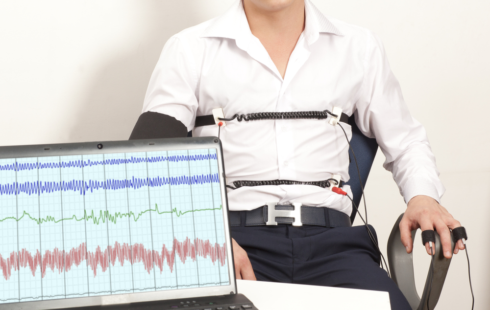

Polygraph Testing & Forensic Document Analysis
A typical polygraph examination room.
In the following lessons you will:
When a person is being deceptive and telling a lie - no matter age or gender - certain universal physiological stress responses are triggered in the body. This fact led to the development of a forensic instrument that detects and monitors these physiological responses. The instrument developed is called the polygraph, but it has commonly become known as the lie detector.

Forensic document analysis involves the examination of documents for which the source or authenticity is in doubt. The most common types of documents that are analyzed by forensic experts include letters, cheques, drivers licenses, contracts, wills, passports, and lottery tickets. Verifying a questionable document may involve a visual examination (human-eye and/or microscope) and/or chemical analysis (chromatography).
By the end of Module 6, you should be able to
"Guilt always carries fear around with it. There is a tremor in the blood of a thief, that if attended to, would effectually discover him."
- Daniel Defoe (English novelist, 1730.)